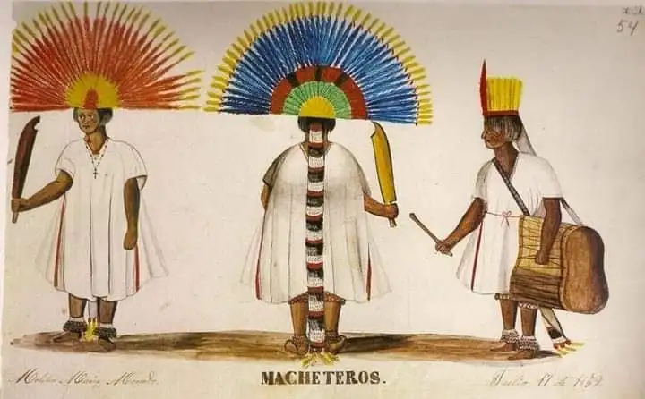

Contexto Histórico
El Oriente colonial fue la primera región en experimentar el impacto de la conquista europea impulsada por la fiebre de las perlas en Cubagua y Margarita, aunque esta inmensa riqueza natural se agotó rápidamente. Tras ello, Cumaná, la ciudad primogénita del continente, lideró una provincia fuertemente militarizada y marcada por la constante amenaza de piratas ingleses, franceses y holandeses que codiciaban las salinas de Araya. Su economía tuvo que diversificarse hacia la agricultura y un contrabando masivo con las islas caribeñas vecinas. Esta estrecha conexión constante con el mar Caribe hizo del Oriente una región comercialmente muy activa, donde pesadas fortalezas costeras de piedra protegían las rutas marítimas mientras los misioneros intentaban adentrarse hacia el sur buscando dominar el territorio indígena.
Imagenes
